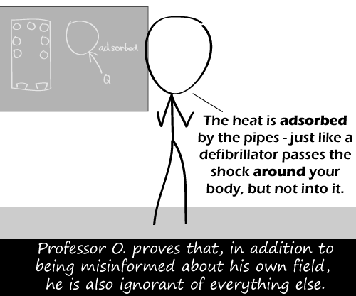

Comic JK 602
When I Feel Like It
⇤
<
?
>
⇥

⇤
<
?
>
⇥
Forum
.
RSS
.
Digg
.
Facebook
.
Reddit
.
Twitter
.
Stumbleupon
Enter your thoughts on number 602 here. Please, no spamming, trolling, phreaking, or misinformation. I actually read the text twice before reading the caption. It rather magnified the effect. "Like that electric shock heart thingy..." >Yeah, I'm not sure how to describe a defibrillator in censorable terms. Well...not without forcing it. >"Adsorbtion" always sounded like a made-up word/idea to me; I know all ideas are 'made up', but that one seemed to add nothing to language or science. >>Why not? There are a lot of instances where there's a fundamental difference between absorption and adsorption. Surface chemistry is critical in a lot of major chemical processes. I will, however, admit, adsorption is damned inconvenient to type on a qwerty board. >Why not?? - There were perfectly good words already like adhere or even condense/sublimate. >>> ad and ab are both latin words. Ad means... "away from" I think, and ab means "by" or "towards." I think. Honestly, I get them confused all the time in my latin 200... >>>> After all, it's only a matter of which side the ascender is on. >>>> mixed up. ab means "by" or "away from". ad means "to", "toward", or "near". >>>>> think of different words, like "advance" and "abdicate" I know what adsorption mean, but I don't get the joke... >The heat becomes attached to the pipe? Energy doesn't work that way... >> Nah, energy's too damn lazy to work Your anus adsorbed my woman juices.